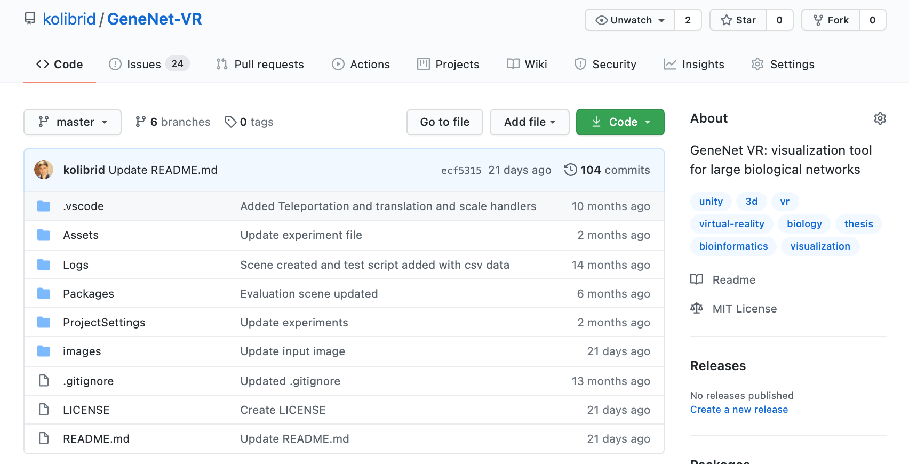

Master's thesis presentation:
GeneNet VR: Large Biological Networks in Virtual Reality Using Inexpensive Hardware
By: Álvaro Martínez Fernández
Index
- Introduction
- GeneNet VR
- Evaluation
- Conclusions
- Future work
- Questions
Introduction
CASE STUDY: MIxT
https://mixt-tumor-stroma.bci.mcgill.ca/network
Biological networks from MIxT
2 datasets: blood and biopsy with biological information from BC patients
Blood dataset (largest one) has 2693 nodes and one of nodes has 1607 edges (max number in both datasets)
GeneNet VR
https://github.com/kolibrid/GeneNet-VR
Evolution of the visualization for network biology
Evolution of the visualization of biological networks through history. From more primitive visualization techniques to more advanced (Virtual Reality). Adapted figure from [1]
Virtual Reality
3-dimensional space
Immersive
Very interactive
Advantages in visualization
Previous work
- BioVR[2]: visual analysis of DNA/RNA protein structures
- CellexaVR[3]: visualization of single-cell RNAseq
- BigTop[4]: rendering of Manhattan plots in three dimensions
[3] Oscar Legetth et al. “CellexalVR: A virtual reality platform for the visualisation and analysis of single-cell gene expression data.” In: bioRxiv (2019). doi: 10.1101/329102
[4] Samuel T. Westreich et al. “BigTop: A Three-Dimensional Virtual Reality tool for GWAS Visualization.” In: (2019). doi: 10.1101/650176
Oculus Quest
- Standalone VR headset
- Hardware limitations
- Affordable price (Oculus Quest 2 is $299)
Contributions
- GeneNet VR: Prototype of a VR application for the Oculus Quest
- Use case using real large biological networks
- Performance and scalability evaluation
- The system achieves 72 FPS and scales well for the used network sizes
- Interviews with research scientists to obtain feedback
- Design and implementation guidelines based on the evaluation results
GeneNet VR
Implementation of GeneNet VR

Architecture and design of GeneNet VR.
Particle system to represent the nodes
- Native in Unity
- Control over the position of each of the nodes
- Easy to manipulate
- Store the information in hash maps
- Node names and groups from external files
- The positions are calculated in GeneNet VR
Lines to represent the edges
- Line Renderer component from Unity
- It consists of 2 points in the 3D space
- Data from external file
- Prefab asset
- Added and removed from the scene dynamically
Other visual elements
Interactions in GeneNet VR

Mapping of the Oculus Quest controllers for the different actions imple- mented in GeneNet VR.
Network translation
Network translation
Example of the network translation interaction in GeneNet VR.
Network scaling
Example of the network scaling interaction in GeneNet VR.
Node selection
Node selection
Example of the node selection interaction in GeneNet VR.
Locomotion solutions
Node filtering
Example of the node filtering interaction in GeneNet VR.
Network morphing
Morphing
Example of the morphing interaction in GeneNet VR.
Evaluation
Evaluation questions
- For which interactions do we achieve the recommended FPS (72) for large biological networks?
- What network properties influence the scalability?
- Do we achieve the recommended FPS (72) for large biological networks when using the standalone Oculus Quest?
- How do users perceive the visualization of large biological networks in GeneNet VR?
Benchmark
- I created repeatable benchmark scripts in Unity
- We repeated the experiments 4 times
- We used the blood dataset from MIxT
- Experiments run on the PC except for one experiment on the Oculus Quest (3rd question)
Oculus' performance guidelines
- 72 FPS for Oculus Quest (required by Oculus)
- 50-100 draw calls per frame
- 50,000-100,000 triangles or vertices per frame
72 FPS
- We measured the frame time
- The time frame tells you how long each frame takes to render
- The interactions need to be smooth
- 13.9 milliseconds is our reference
1. For which interactions do we achieve the recommended FPS (72) for large biological networks?
Description of the experiments
- The experiments were run on the PC's hardware
- Evaluated network translation, network scaling and select node interactions
- Measured the time frame of 700 frames for each experiment
- Used 3 network sizes (whole, half and a third)
- Calculated the average of all the time frames and the average of 1% and 0,25% worst time frames
Description of the experiments
- Use of sine and linear functions to translate and scale the network experiments
- Edge creation for several nodes in node selection experiment
- Representative averages: all time frames and 1% worst time frames
Results for the average of all the time frames
Translate and scale the network: 6.5 to 6.6 milliseconds
Select node experiment: 8.6 to 8.7 milliseconds
Results

Bar graph showing a summary of the performance results for the 1% lowest average (7 frames with worst performance).
Discussion
Need to evaluate larger networks
For which size limits the system performs at 72 FPS?
The performance for our network sizes meets the 72 FPS
Performance for node selection is worst
2. What network properties influence the scalability?
Network properties that influence the scalability
Time to create the edges

Scatter plot showing the relation between the number of edges to render and the time that it takes to render for the blood dataset.
Discussion
3. Do we achieve the recommended FPS (72) for large biological networks when using the standalone Oculus Quest?
Experiment setup

Performance of GeneNet VR when visualizing the blood dataset running on a machine and on the Oculus Quest. The x-axis represents the frame number (like a timeline). The y-axis represents the amount of time in milliseconds that a particular frame took to render.
Discussion
4. How do users perceive the visualization of large biological networks in GeneNet VR?
6 semi-structured interviews with research scientists
We asked 3 open-ended questions:
- How do you perceive the application?
- How do you perceive the application for pattern finding?
- What is missing in the application?
Discussion
Feedback
Conclusion
Conclusions
Contributions
https://www.youtube.com/watch?v=N4QDZiZqVNYVideo contribution of GeneNet VR.
Contributions
 https://github.com/kolibrid/GeneNet-VRScreenshot from the repository on GitHub where GeneNet VR is hosted.
Future work
Future work
New requirements from the interviews
Future work
Design of a UI for GeneNet VR.